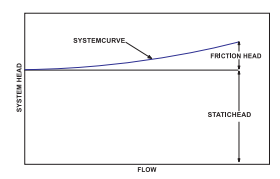
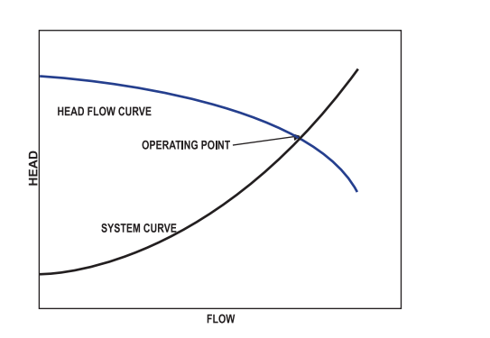
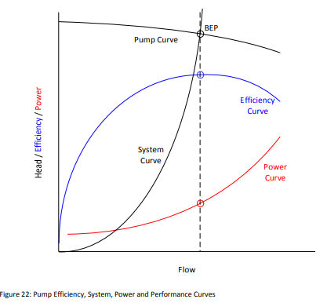

Friction head is the measure of resistance to flow provided by the pipe , valve
etc.
Static Head
The static head is the amount of feet of elevation the pump must lift the water
regardless of flow

Operating Point
It is a point where system curve and pump curve intersect

Suction Head(hs)
The vertical distance from the water line to the centerline of the impeller
Discharge Head(hd)
The vertical distance from the discharge outlet to the point of discharge or liquid
level when discharging into the bottom of a water tank.
Pump Capacity (Q)
Volume of Liquid delivered by pump per unit time in m^3/hr
Pump Performance Curve

Best Efficiency Point (BEP)
The best efficiency point (BEP) refers to the most efficient operating point for a
centrifugal pump. This is the point at which each pump should operate for optimal system design
Instruments
Power Analyzer
To measure Electrical parameters such as kW, kVA, PF, Hz, Volts, Amps, kVAr.